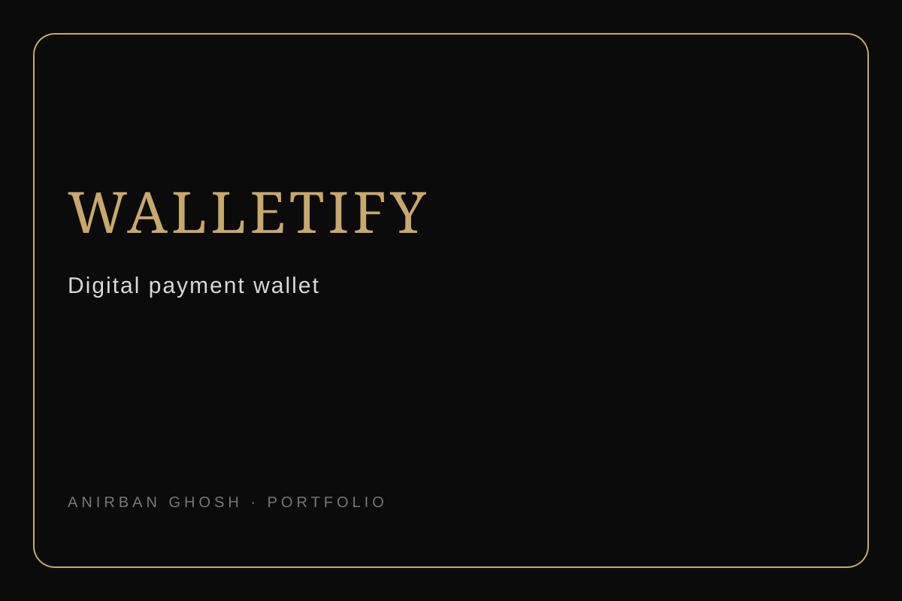
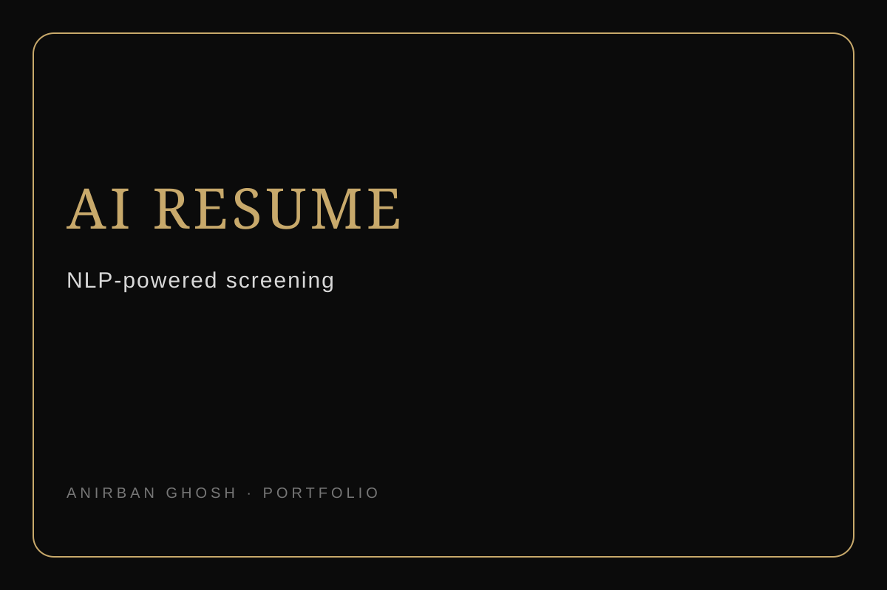
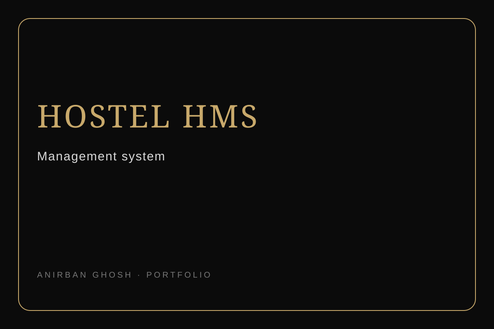

01FULL STACK · MERN
Walletify
A digital payment wallet project inspired by real-world payment platforms, built to explore authentication, transactions and full-stack application design.
View case studyProjects across software engineering, AI and creative technology. Each one is a small record of a problem I wanted to solve or an idea I wanted to explore.
From full-stack applications to AI experiments, these are the projects that shaped my technical journey.

01A digital payment wallet project inspired by real-world payment platforms, built to explore authentication, transactions and full-stack application design.
View case study
02An AI-powered resume screening and ranking system using NLP and machine-learning techniques to process and compare candidate profiles.
View case study
03A practical management system designed to organise hostel-related records and workflows.
A music-interface project created to practise frontend structure, responsive layouts and interactive UI behaviour.
An Airbnb-inspired application exploring listings, routing, authentication and full-stack application patterns.
A growing collection of smaller technical experiments, tools and ideas that don't need their own case study.
A full-stack digital wallet project built as a practical exploration of authentication, transaction flows and application architecture.
Understand how a payment-oriented application can be structured from the user interface to the backend.
Built a MERN application with user flows, APIs, data models and a responsive frontend.
Thinking about security, state, validation and the boundary between interface and business logic.
An internship project exploring how NLP and machine learning can help structure and compare unstructured candidate information.
Resume documents containing varied text, skills and experience descriptions.
Text preprocessing, feature extraction and model-based ranking with Python tools.
A usable interface for screening and comparing candidate profiles.